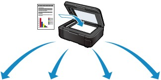
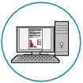
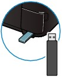
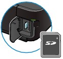

Besides saving scanned data to the computer, you can save them on a memory card or USB flash drive, or attach them to E-mail on the computer, if you press the left Function button to select Save/Forward on the scan standby screen.
For details, refer to the on-screen manual: Advanced Guide.
 |
|||
 |
 |
 |
|
Attach to E-mail |
PC |
USB flash drive |
Memory card |